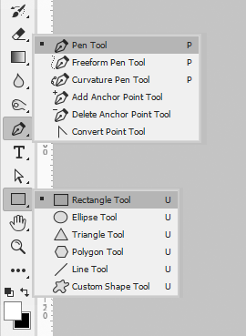
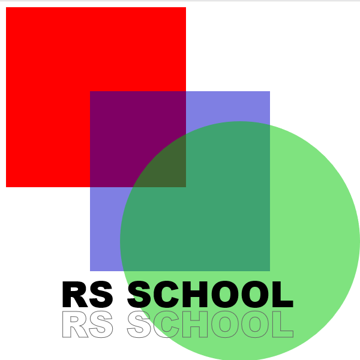

Canvas
Presentation by Maksym Lytvyn for RS School
Another canvas example
What is a Canvas API?
The Canvas API provides a means for drawing graphics via JavaScript and the HTML <canvas>
element.
Canvas API can be used for:
- animation
- game graphics
- data visualization
- photo manipulation
- and real-time video processing
Canvas API focuses on 2D, but there's also WebGL API which uses canvas to make 3D!
Raster, not vector!
The <canvas> element
Very simple, just like <img>:
Rendering context
2D or WebGL (WebGL2)
Drawing Shapes
MoveTo, Paths, Lines, Rectangles, Arcs, Beziers, Path2D (SVG path data), Text, etc...
Code example: Shapes
ctx.fillStyle = "red";
ctx.fillRect(10, 10, 300, 300);
ctx.fillStyle = "rgba(0, 0, 200, 0.5)";
ctx.fillRect(150, 150, 300, 300);
ctx.fillStyle = "rgba(0, 200, 0, 0.5)";
ctx.beginPath();
ctx.arc(400, 400, 200, 0, 2 * Math.PI);
ctx.fill();
ctx.fillStyle = "#000";
ctx.font = "60px 'Arial Black'";
ctx.fillText("RS SCHOOL", 100, 510);
ctx.strokeStyle = "rgb(100,100,100)";
ctx.strokeText("RS SCHOOL", 100, 560);
Canvas Grid

- The origin of the grid is in the top left corner (0,0).
- All elements are placed relative to this origin.
- We can translate the origin, rotate grid and scale.
Result of the Shapes code
Draw Image
Any format supported by a browser!
- Images: JPG, PNG, WEBP...
- SVG
- Video
- ImageBitmaps (sprites, textures)
- Another canvas (onscreen, offscreen)
Code example: Image
Just two steps: find source and drawImage
- Find source
- drawImage
const img1 = new Image();
img1.src = "./img/superhero.png";
img1.onload = () => ctx.drawImage(img1, 0, 0);
const img2 = new Image();
img2.src = "./img/rs_school.svg";
img2.onload = () => ctx.drawImage(img2, 210, 320, 170, 65);
Result of the Image code
Animation
As the canvas is raster, we would redraw the picture every frame:
- Clear the canvas:
clearRect() - Save the canvas state:
save() - Draw an animated object
- Restore the canvas state:
restore()
As we use JavaScript, it's easy to make interactive elements!
Clear the canvas
function clear() {
ctx.fillStyle = "rgba(255, 255, 255, 1)";
ctx.fillRect(0, 0, canvas.width, canvas.height);
}
Animated object
const rsImage = new Image();
rsImage.src = './img/rs_school.svg';
const obj = {
x: 220, // Starting coordinate x
y: 50, // Starting coordinate y
velocity: 2, // Starting falling speed
draw() {
ctx.drawImage(rsImage, this.x, this.y, 170, 65);
}
};
Draw animated object
function animateObj() {
clear();
obj.draw(); // Draw the object
obj.y += obj.velocity; // Change the object y coordinate
obj.velocity += .25; // Increase velocity due to gravity
// Request animation if still falling
if (obj.y < (canvas.height - 65)) {
window.requestAnimationFrame(animateObj);
}
}
animateObj();
Result of the Animation
Interactivity
let running = false;
canvas.addEventListener("mousemove", (e) => {
if (!running) { // When mouse moves, attach object to the mouse
clear();
obj.x = e.clientX;
obj.y = e.clientY;
obj.draw();
}
});
canvas.addEventListener("click", (e) => {
if (!running) { // When click, drop object
window.requestAnimationFrame(animateObj);
running = true;
}
});
Result of the Interactivity
Libraries
Canvas might not be simple, but libraries would help!
- EaselJS — simple library to help with the canvas
- p5.js — canvas library for creative coding
- Konva — more powerful framework for applications
- Phaser — top pick for RS Clone games!
- PlayCanvas — most advanced WebGL game engine
- Much more for 2D and 3D!